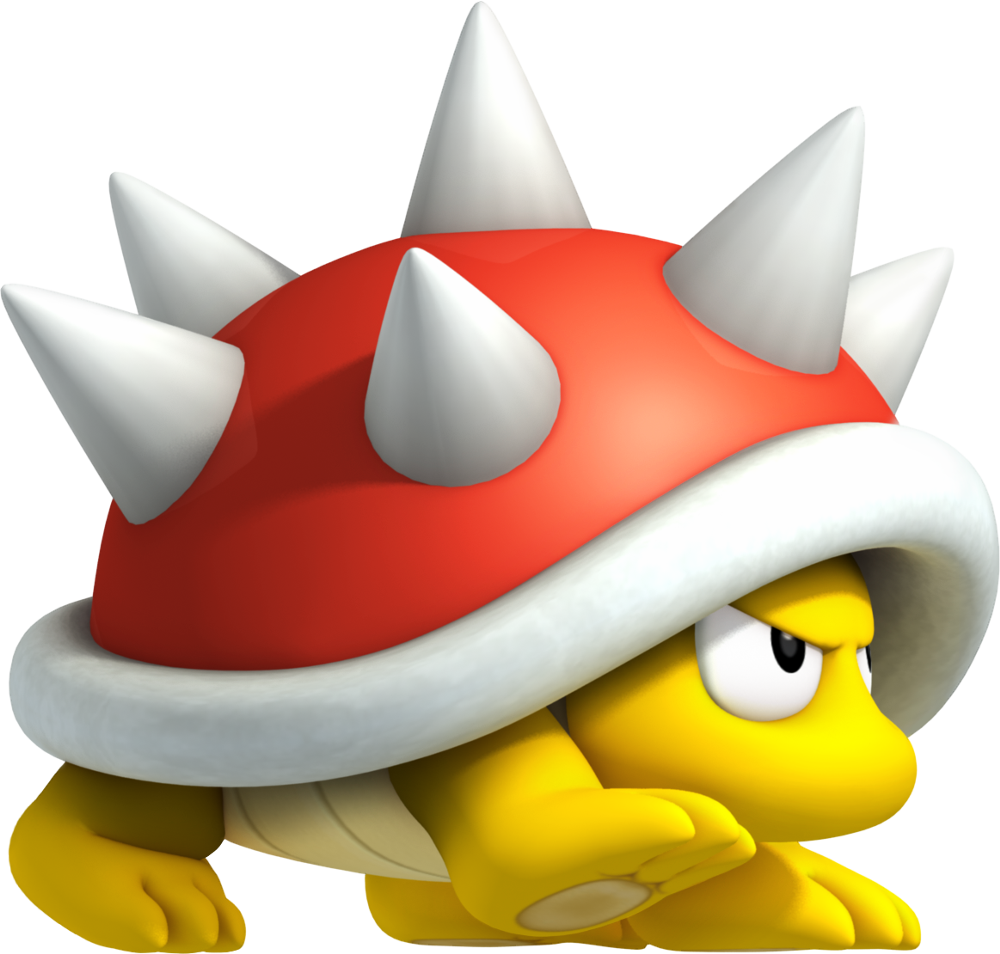
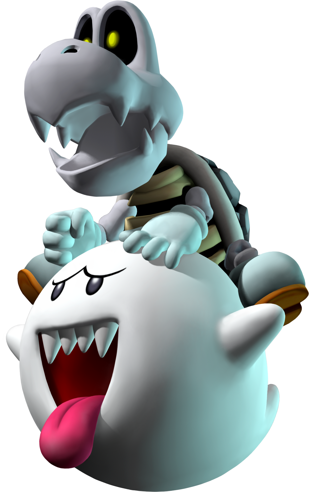

Bir Nintendo Klasiği
Bir Nintendo Klasiği
Mario'nun Doğuşu: Bir Depo Sahibinden Bir Efsaneye
Mario, ilk kez 1981'de "Donkey Kong" oyununda "Jumpman" adıyla ortaya çıktı. Ancak karakterin ismi, Nintendo'nun Kuzey Amerika ofisinin depo sahibi Mario Segale’den esinlenerek "Mario" olarak değiştirildi. Bu tesadüf, Mario'nun işçi sınıfı bir İtalyan-Amerikan karakteri olarak tasarlanmasına yol açtı. 1985'te "Super Mario Bros." ile büyük bir başarı yakalayarak, Mario Nintendo'nun maskotu haline geldi ve video oyun dünyasında efsaneleşti.
Mario'nun Tasarımcısı Oyunları Nasıl Tasarlıyor ? Detaylı Bilgi İçin Tıklayınız.
 Mantar Krallığının Kahramanı Mario'nun Düşmanları
Mantar Krallığının Kahramanı Mario'nun Düşmanları
-
 Bowser
Bowser
-  Koopa Tropa
-  Boo
-
 Goomba
Goomba
Super Mario'nun Süper Güçleri
- Süper Zıplama
- Ateş Atma
- Süper mantar yiyerek devleşme
- Yıldız ile geçiçi ölümsüzlük
Super Mario'nun Takım Arkadaşı
- Mario'nun sadık yol arkadaşı Luigi.